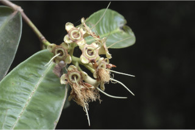
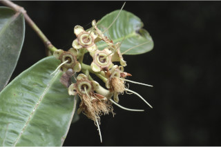

Trees up to 10 m tall.
10 ಮೀ. ಎತ್ತರದವರೆಗೆ ಬೆಳೆಯುವ ಮರಗಳು.
Trees up to 10 m tall.
மரங்கள் 10 மீ. உயரம் வரை வளரக்கூடியது.
Bark brown, smooth, irregularly flaky when mature; blaze reddish brown.
ತೊಗಟೆ ಕಂದು ಬಣ್ಣದಲ್ಲಿದ್ದು ಬಲಿತಾಗ ಅನಿಯತವಾದ ಚಕ್ಕೆ ರೂಪದಲ್ಲಿರುತ್ತದೆ;ಕಚ್ಚು ಮಾಡಿದ ಜಾಗ ಕೆಂಪು ಮಿಶ್ರಿತ ಕಂದು ಬಣ್ಣದಲ್ಲಿರುತ್ತದೆ.
Bark brown, smooth, irregularly flaky when mature; blaze reddish brown.
மரத்தின் பட்டை ப்ரவுன் நிறமானது, வழவழப்பானது, முதிர்ந்த பின் ஒழுங்கற்ற செதில்களாக உதிருபவை; உள்பட்டை சிவப்பு ப்ரவுன் நிறமானது.
Branchlets stout, subterete, glabrous.
ಕಿರುಕೊಂಬೆಗಳು ದೃಢವಾಗಿದ್ದು ಉಪ-ದುಂಡಾಗಿರುತ್ತವೆ ಮತ್ತು ರೋಮರಹಿತವಾಗಿರುತ್ತವೆ.
Branchlets stout, subterete, glabrous.
சிறியநுனிக்கிளைகள் தடித்தவை, சிறியநுனிக்கிளைகள் குறுக்குவெட்டுத் தோற்றத்தில் வளையமானது, உரோமங்களற்றது.
Leaves simple, opposite, decussate; petiole 0.4 to 1 cm log, stout, canaliculate, glabrous; lamina 14-31 x 4-11.5 cm, oblong or elliptic-oblong, apex obtuse to acuminate, base cordate or subcordate, margin entire, sometimes revolute, pellucid gland dotted, coriaceous, glabrous; midrib strongly canaliculate above; intramarginal nerves present; secondary_nerves 15-22 pairs, strong, distant; tertiary_nerves obscure.
ಎಲೆಗಳು ಸರಳವಾಗಿದ್ದು ಅಭಿಮುಖವಾಗಿ ಜೋಡನೆಗೊಂಡಿದ್ದು ಕಾಂಡದ ಎರಡೂ ಕಡೆ ಎದುರು ಬದರಿನ ಲಂಬ ಸಾಲಿನಲ್ಲಿರುತ್ತವೆ;ತೊಟ್ಟುಗಳು 0.4-1 ಸೆಂ.ಮೀ. ಉದ್ದಹೊಂದಿದ್ದು ದೃಢವಾಗಿರುತ್ತವೆ ಮತ್ತು ಕಾಲುವೆಗೆರೆ ಸಮೇತವಿರುತ್ತವೆ ಮತ್ತುರೋಮರಹಿತವಾಗಿರುತ್ತವೆ;ಪತ್ರಗಳು 14–31X4-11.5 ಸೆಂ.ಮೀ.ವರೆಗಿನ ಗಾತ್ರವಿದ್ದು ಚತುರಸ್ರ ಅಥವಾ ಅಂಡವೃತ್ತ-ಚತುರಸ್ರದ ಆಕಾರ,ಚೂಪಾದುದರಿಂದ ಹಿಡಿದು ಕ್ರಮೇಣ ಚೂಪಾಗುವ ತುದಿ, ಹೃದಯಾಕಾರದ ಅಥವಾ ಉಪ-ಹೃದಯಾಕಾರದ ಬುಡ,ನಯವಾದ ಅಥವಾ ಕೆಲವು ವೇಳೆ ಹಿಂಸುರುಳಿಗೊಂಡ ಅಂಚು, ಪ್ರಕಾಶ ಭೇಧ್ಯ ರಸಗ್ರಂಥಿ ಚುಕ್ಕೆಗಳ ಸಮೇತವಿದ್ದು ತೊಗಲನ್ನೋಲುವ ಮೇಲ್ಮೈ ಹೊಂದಿದ್ದು ಕಾಗದವನ್ನೋಲುವ ಮೇಲ್ಮೈ ಹೊಂದಿದ್ದು ರೋಮರಹಿತವಾಗಿರುತ್ತವೆ;ಮಧ್ಯ ನಾಳ ಮೇಲ್ಭಾಗದಲ್ಲಿ ಬಹುಸ್ಪಷ್ಟವಾದ ಕಾಲುವೆಗೆರೆಯ ಸಮೇತವಿರುತ್ತದೆ;ಅಂತರ ಅಂಚಿನ ನಾಳಗಳು ಇರುತ್ತವೆ;ಎರಡನೇ ದರ್ಜೆಯ ನಾಳಗಳು 15-22 ಜೋಡಿಗಳಿದ್ದು ದೃಢವಾಗಿದ್ದು ಹೆಚ್ಚಿನ ಅಂತರದಲ್ಲಿರುತ್ತವೆ; ಮೂರನೇ ದರ್ಜೆಯ ನಾಳಗಳು ಅಸ್ಪಷ್ಟ.
Leaves simple, opposite, decussate; petiole 0.4 to 1 cm log, stout, canaliculate, glabrous; lamina 14-31 x 4-11.5 cm, oblong or elliptic-oblong, apex obtuse to acuminate, base cordate or subcordate, margin entire, sometimes revolute, pellucid gland dotted, coriaceous, glabrous; midrib strongly canaliculate above; intramarginal nerves present; secondary_nerves 15-22 pairs, strong, distant; tertiary_nerves obscure.
இலைகள் தனித்தவை, எதிரடுக்கமானவை, குறுக்குமறுக்கானவை; இலைக்காம்பு 0.4 முதல் 1 செ.மீ. நீளமானது, தடித்தவை, இலைக்காம்பு குறுக்குவெட்டுத் தோற்றத்தில் கேனாலிகுலேட், உரோமங்களற்றது; இலை அலகு 14-31 X 4-11.5 செ.மீ., நீள்சதுர வடிவானது அல்லது நீள்வட்ட-நீள்சதுர வடிவானது, அலகின் நுனி மெட்டையானது முதல் அதிக்கூரியது, அலகின் தளம் இதய வடிவானது அல்லது சிறிய இதய வடிவானது, அலகின் விளிம்பு முழுமையானது, சிலசமயங்களில் பின்புறம் வளைந்து (ரெவலுட்) காணப்படும், ஒளிபுகும் சுரப்பி புள்ளிகளுடையது, கோரியேசியஸ், உரோமங்களற்றது; மையநரம்பு தடித்தவை, குறுக்குவெட்டுத் தோற்றத்தில் கேனாலிகுலேட்; விளிம்பு நரம்பு (இண்ட்ராமார்ஜினல் நரம்பு) கொண்டது; இரண்டாம் நிலை நரம்புகள் 15-22 ஜோடிகள், தடித்தவை; மூன்றாம் நிலை நரம்புகள் கண்களுக்கு புலப்படாது.
Inflorescence terminal, many flowered corymbs; flowers large, white, fragrant.
ಪುಷ್ಪಮಂಜರಿಗಳು ತುದಿಯಲ್ಲಿನ,ಹೆಚ್ಚು ಹೂಗಳನ್ನೊಳಗೊಂಡ ನೀಳಛತ್ರ ಮಾದರಿಯವು;ಹೂಗಳು ದೊಡ್ಡ ಗಾತ್ರದಲ್ಲಿದ್ದು ಬಿಳಿ ಬಣ್ಣದವುಗಳಾಗಿರುತ್ತವೆ.
Inflorescence terminal, many flowered corymbs; flowers large, white, fragrant.
மஞ்சரி தண்டின் நுனியில் காணப்படும், எண்ணற்றவை மலர்களுடையது கோரியம்ப் வகை மஞ்சரி; மலர்கள் பெரியவை, வெள்ளை நிறமானது, நறுமணமிக்கது.
Berry, ovoid, greenish-pink, 2.5 cm long, crowned with persistent calyx.
ಬೆರ್ರಿ ಫಲಗಳು ಅಂಡದ ಆಕಾರದಲ್ಲಿದ್ದು,ಹಸಿರು ಮಿಶ್ರಿತ ನಸುಗೆಂಪು ಬಣ್ಣದಲ್ಲಿದ್ದು ಮುಕುಟದಲ್ಲಿ ಶಾಶ್ವತವಾಗಿ ಉಳಿಯುವ ಪುಷ್ಪಪಾತ್ರೆಯ ಸಮೇತವಿರುತ್ತವೆ.
Berry, ovoid, greenish-pink, 2.5 cm long, crowned with persistent calyx.
முழுச்சதைகனி (பெர்ரி), முட்டை வடிவானது, பச்சை-பிங்க் நிறமானது, 2.5 செ.மீ. நீளமானது, நிரந்தரமான புல்லி இதழ்களுடையவை.


 
